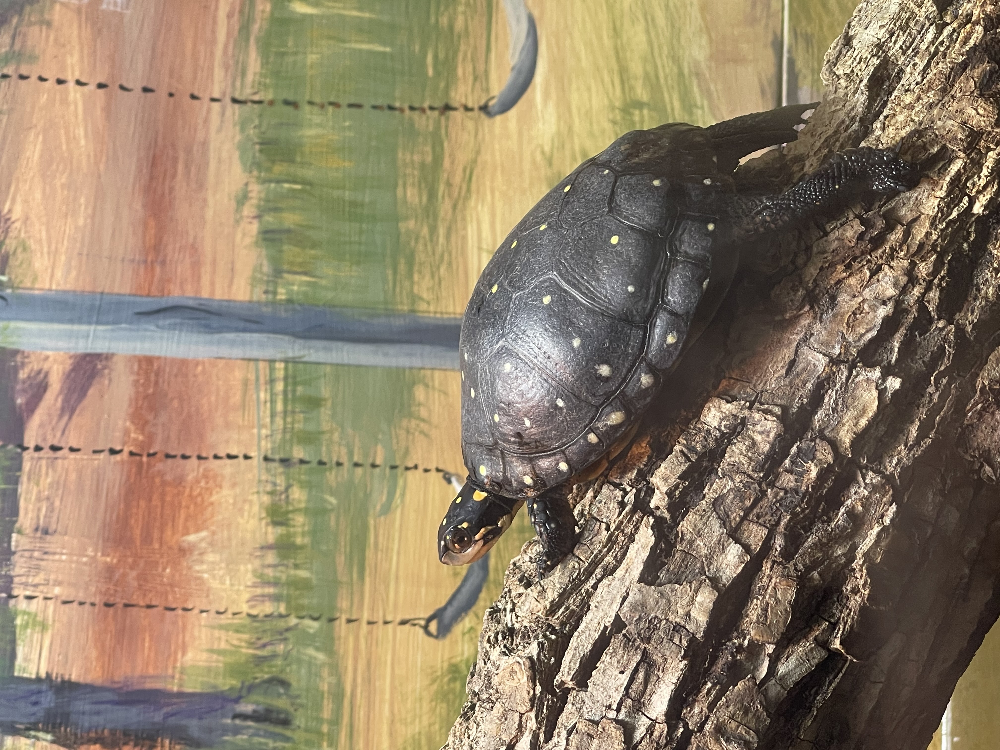

Next, we wandered into the Reptile House, where cool, dim lighting and the peculiar smells of the terrarium intrigued us all. Akbar lifted Amir up to see a massive turtle in its glass enclosure. Aziz was mesmerized by the colorful dart frogs, pressing his nose against the glass to get a closer look.
The world of big turtles, often specifically referring to species like the Galapagos tortoises or Aldabra giant tortoises, is full of wonder and intrigue. During our trip to the Philadelphia Zoo, we visited the "Turtle Terrace," an exhibit dedicated to these magnificent, long-lived creatures. As we approached the enclosure, we were greeted by a serene, almost otherworldly scene. The enclosure was designed to resemble a lush, tropical island with plenty of sunlight, sandy patches, and small ponds. The giant tortoises moved slowly and deliberately, their massive, domed shells gleaming in the sunlight.

Zoo frogs are an enchanting bunch and offer a delightful peek into the amphibian world. During our visit to the Central City Zoo, we explored the "Frog Fort," an exhibit teeming with these fascinating creatures. The Frog Fort was housed inside a warm, humid building mimicking a tropical rainforest, perfect for the diverse array of frogs. The air was filled with the sounds of croaking, chirping, and the rhythmic drip of water, creating an immersive experience.